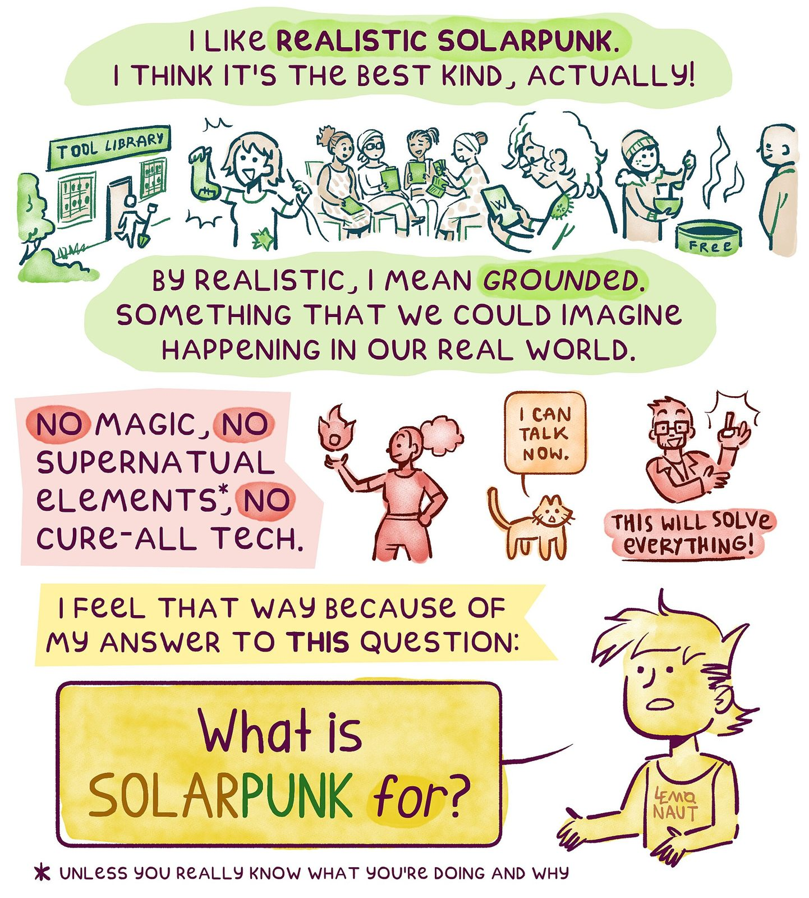

References / Editorial / 543
Solarpunk, realism, and dystopia (comic, page 1)
The first page of a six-page explainer comic that argues for “realistic solarpunk”, lettered by hand in green, coral, and yellow washes on white.
- Source
- Wikimedia Commons: File:Solarpunk, realism, and dystopia - page 1.jpg
- Creator
- The.lemonaut.ukr
- Made
- 2025
- Style
- Solarpunk (agent-proposed, not yet reviewed by a person)
- Moods
- Friendly, handmade, earnest
- Evidence
- Downloaded and inspected page 1 on Commons (original 2400 × 2663 px, viewed at 1442 × 1600 px). Pages 2 to 6 were not inspected.
- Reviewed
- Rights
- Open license, stored. License: CC-BY-SA-4.0. Rights policy

Context
Commons describes the six pages as “a comic discussing realistic Solarpunk”, dated 14 May 2025, licensed CC BY-SA 4.0. Commons file page.
Observed
- The page has a white ground. Text sits in soft, irregular washes of pale green, coral, and pale yellow, like watercolour blobs.
- The lettering is hand-drawn capitals in dark plum, with some words bolder and highlighted in green: “I LIKE REALISTIC SOLARPUNK.”
- A strip of small line drawings shows a “TOOL LIBRARY” with a planted entrance, a person mending a sock, a reading group with tablets, and a free soup pot.
- A coral panel lists “NO MAGIC, NO SUPERNATURAL ELEMENTS*, NO CURE-ALL TECH” beside a fire-wielding figure, a talking cat, and a man saying “THIS WILL SOLVE EVERYTHING!”.
- A yellow rounded box asks “What is SOLARPUNK for?”, with “SOLAR” in ochre and “PUNK” in green, beside a yellow-washed self-portrait in a “LEMONAUT” shirt.
Why it belongs
This is the style in an editorial format, not a scene. It shows the rounded, framed panels on a light ground that the style’s grammar describes for layouts, and a mixed-case friendly hand.
Colour carries meaning: green for the hopeful position, coral for what the author rejects.
Borrow
Set short statements in soft rounded colour washes on white, and use a second hue for counter-arguments.
Pair each idea with a small line drawing of a shared practice (tool library, repair, free food).
Measured
Machine-extracted by tools/image-traits.py on . Full measurement.
- Mean chroma
- 0.14
- Palette
- #ffffff 42%
- #deefc0 11%
- #f9ded9 5%
- #fdf2a4 5%
- #f4e27b 3%
- #541035 3%
- #f2de65 3%
- #f6e78f 3%

